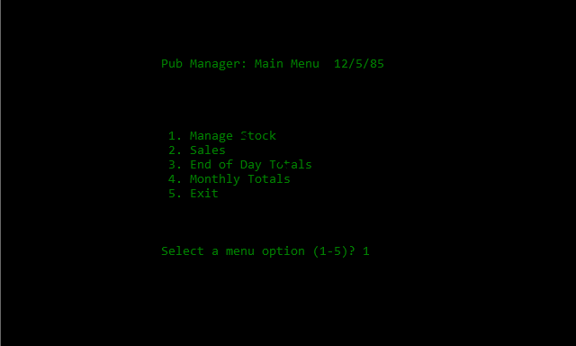
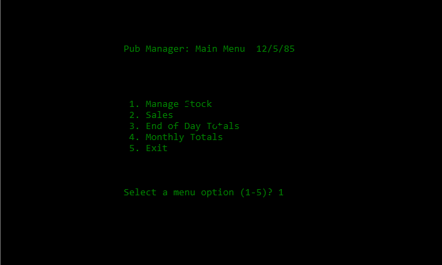

- Title: Public House - Stock Management and Point of Sale
- Date: Jan-May 1983.
- Language: Research Machines BASIC.
- Project: High School Graduation, Computer Science.
Top marks for this project, although it was by far the easiest of the three. All I had to do was examine a few forms and receipts from my parents' public house and build a database around them. I suspect the evaluators did not dig into the code too far or my monopoly game would have come out first.
In addition to being the easiest of the my three graduation projects, it was also the least fun to write: no room for creativity: just replicate a paper-based business workflow in code. On the other hand, no public house "landlord" (as they are referred to) would have, in those days, replaced a perfectly good cash register and account books with a several-thousand dollar 380Z, so this was strictly an exercise in what was possible, rather than what was practical.
The original program and data have long since been lost. Even if they hadn't, I would have no 380Z on which to run it. Here, I've simulated several screens with a DOS batch file. Memory is a funny, thing, so I don't guarantee it matches the original, but at least it gives an idea
By the way, a Public House is a "Pub" -- similar to a Bar in the US.
Best, Dave
 
